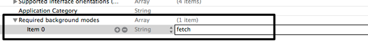
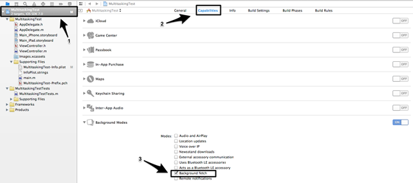
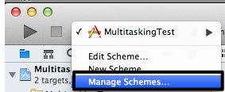
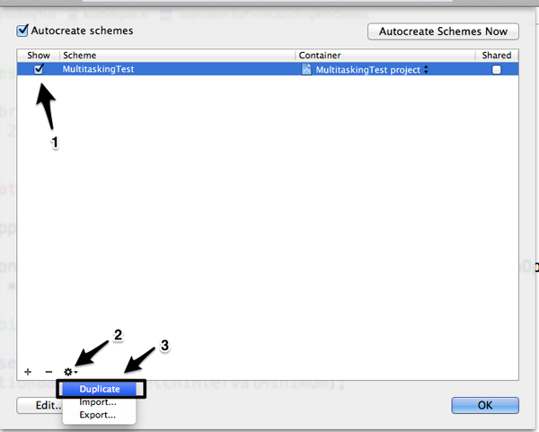
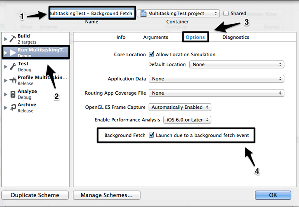
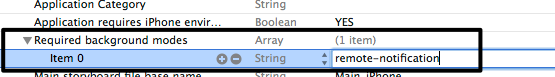
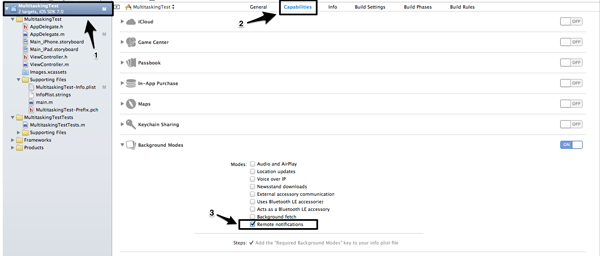

原文地址：http://code.tutsplus.com/tutorials/ios-7-sdk-multitasking-enhancements--mobile-20295
这篇教程向我们介绍iOS7 SDK中多任务的改进，具体来说，你将了解到Background Fetch, Remote Notifications, 和Background Transfer Service APIs。
多任务概述
iOS7中，Apple新加了3类新的mutltitasking APIs：
- Background Fetch
- Remote Notifications
- Background Transfer Service
这些APIs可以使程序员更充分的利用硬件特性完成多任务，以向用户提供跟好的用户体验。本教程会教你跟多关于上述三个改进，以及什么时候该使用他们。
Background Fetch
为了使Background Fetch API更加易于理解，想像一下你想建立一个新闻类app，该类应用 的内容由网络提供，会有一个重要的特点就是每次用户打开app都要跟新内容。
在iOS7之前，开发者会在app启动的时候获取跟新内容。这样做有一个缺陷，就是用户在需要在启动app后等待一段时间，等待时间也要受到手机的连接速度的影响。试想一下，如果用户在一两个星期没有使用后，通过蜂窝网打开app会需要等多久。这显然不是开发者所希望的，因为这会影响用户体验。
在iOS7及其之后，这种情况会得到彻底改变。使用Background Fetch API可以使app在后台被动下载跟新内容。iOS会唤醒app，并分配后台时间，当app完成跟新后就又会回到休眠状态。当然，当发生跟新时，用户不会接到通知。当他们返回应用的时候，他们将看到的是跟新后的内容。
更新过程可以在任一由程序员或由系统预定的时间间隔发生。如果你选择自定义间隔，苹果建议你应该设置更大的间隔，而不是过于平凡的后台获取。太小的间隔，太频繁的跟新会浪费电池和系统资源。如果采用系统设置的时间间隔，那么iOS7会自己更具情况设置。它将会更具用户启动这款app频率以及启动的时间来预测。例如，一款news app，用户一般启动它的时间在每天下午，那么iOS系统会决定应用程序应该在平时下午启动应用时间之前的一段时间进行跟新。非常的智能且节省。
以上描述的Background Fetch包括以下三步骤：
- 打开Background Fetch capability
- 设置最小间隔
- 执行代理方法：
application:performFetchWithCompletionHandler:
来了解一下跟详细的内容。 正如我刚才提到的第一步：打开Background Fetch capability，可以通过Xcode5来完成有两种方式。第一种方式是通过.plist文件，你需要添加一个key为：Required background modes，value为“fetch”的。像下面这样： 
下面的步骤是另外一个方法：
- 点击Xcode左侧栏目的project;
- 点击中间窗口的Capabilities
- 选择Background Fetch单选框 
默认情况下，初始间隔值被设定为：UIApplicationBackgroundFetchIntervalNever,这意味着Background Fetch将永远不会执行。如果不改变该值，那么将不会起作用。你需要在application:didFinishLaunchingWithOptions: 重新设置该值。
- (BOOL)application:(UIApplication *)application didFinishLaunchingWithOptions:(NSDictionary *)launchOptions
{
[application setMinimumBackgroundFetchInterval:UIApplicationBackgroundFetchIntervalMinimum];
return YES;
}
值：UIApplicationBackgroundFetchIntervalMinimum是由系统控制间隔时间且是允许的最小的间隔时间。当然，你也可以通过以上方法设置一个NSTimeInterval类型的值作为自定义的时间间隔。然而，除非必要，最好还是应该由系统控制Background Fetch的执行时间间隔。但是，即便你设置了UIApplicationBackgroundFetchIntervalMinimum,你也要清楚的知道，它不是一种绝对的时序安排，它更像是一种建议，iOS系统会尽可能的这么做，但是也会依据当前的可用系统资源来决定。所以Background Fetch的执行次数会少于或者多于我们的预期。
最后一步是实现新添加的方法：application:performFetchWithCompletionHandler: 当background fetch执行的时候，该方法开始执行。该方法的回调函数会收到以下三种值：
1. UIBackgroundFetchResultNewData:如果获取到了新内容
2. UIBackgroundFetchResultNoData:没有获取到内容
3. UIBackgroundFetchResultFailed:发生错误，获取失败
请看以下操作：
-(void)application:(UIApplication *)application performFetchWithCompletionHandler:(void (^)(UIBackgroundFetchResult))completionHandler{
// Call or write any code necessary to get new data, process it and update the UI.
// The logic for informing iOS about the fetch results in plain language:
if (/** NEW DATA EXISTS AND WAS SUCCESSFULLY PROCESSED **/) {
completionHandler(UIBackgroundFetchResultNewData);
}
if (/** NO NEW DATA EXISTS **/) {
completionHandler(UIBackgroundFetchResultNoData);
}
if (/** ANY ERROR OCCURS **/) {
completionHandler(UIBackgroundFetchResultFailed);
}
}
在新数据被发现时，你必须进行必要的用户界面跟新。必须立刻更新用户界面的原因有两个：1》用户应该在打开应用的时候可以看到更新的内容，而无需任何等待(包括加载时间的等待)；2》app的快照也会保持为更新状态。
这里有几点需要你注意：首先，当app开始从后台执行任务，它只有30秒的时间完成必须的任务。如果30秒时间到了，app将会被再次挂起。如果app需要跟多的时间(比如媒体下载)来执行任务，你应该使用Background Transfer Service API来执行后台获取。我们之后会讲到这个。
你在做好了Background Fetch的编码后，APPle提供了两种方法来测试你的Background Fetch功能：
第一种方法有以下步骤：
- 像往常一样在模拟器上运行app
- 当app运行后，回到Xcode
- 点击菜单栏：Debug > Simulate Background Fetch
这种方法在app运行时候测试API非常有效。第二种方式要复杂多，但是他允许你的app在后台时测试：参考以下步骤： * 打开Schemes列表，点击Manage Schemes...选项。  * 确定选择了当前Scheme，然后复制它：点击窗口下方的齿轮按钮，选择Duplicate  * 为复制的Scheme设置一个名称。 * 选择左侧列表的Run，然后点击Options。 * 选择*Launch due to a background fetch event *单选框，点击OK。  * 运行复制的Scheme。
Background fetch只是用与非关键的更新，所以它们跟新的时间不确定。对于关键的更新，请查看 Remote Notifications 部分的内容。一般Background fetch是适合那些希望无缝地管理内容的app，比如展示类的应用：如：新闻，社交网络，天气，图片共享等。
Remote Notifications
试想一下，我们要构建一个提供书面和视屏教程的应用。我们假设用户每个月会下载新的视屏教程2到3次。所以，我们该如何让用户知道有新的视屏发布呢？我们不能采用 background fetch API或者类似的东西，因为这会浪费硬件资源和无意义的数据请求。我们也无法知道什么时候一个新的视屏教程会发布。因此，我们需要使用Push Notifications，因此每次有新的内容的时候，我们可以简单地通知用户。我们也希望用户能频繁的启动app并下载新的内容，如果内容很大，他们将需要等很长的时间。因此，当有新内容可用的时候，用户如何才能保持最新的内容而又不需要等待呢？
Remote Notifications可以在这里派上作用，Remote Notifications实际上是静默通知，也就是说发送通知，却又不让用户知道通知的存在。当一个新的Remote Notifications到达，系统静默地唤醒app，所以此时app可以执行notification。然后app负责启动下载进程更新内容.当完成下载后，本地通知发送给用户。当应用启动时，新的内容已经在等待用户了。
就像Background Fetch一样，Remote Notifications目的是消除在下载新内容和上传数据时面对的长时间等待的问题。他们的APIs都是在后台线程工作，完成工作后通知用户。然而，Remote Notifications更加适合用在不太频繁的更新或者是非常影响用户体验的情况下。
要在APP中使用Remote Notifications，你必须先激活它们。你可以通过.plist文件或者Capabilities Tab来完成。如果你要使用.plist文件的方式，你需要添加key：Required Background，value： remote-notification， 像下面这样： 
要使用Capabilities tab方式，需要以下步骤： * 点击左侧上面的project * 点击中间窗口的Capabilities导航条 * 打开Background Modes选项，选择Remote Notifications单选框 
下一步是实现方法：application:didReceiveRemoteNotification:fetchCompletionHandler:. 该方法会在新通知到达的时候调用。使用完成回调方法来通知iOS获取数据的结果：
-(void)application:(UIApplication *)application didReceiveRemoteNotification:(NSDictionary *)userInfo fetchCompletionHandler:(void (^)(UIBackgroundFetchResult))completionHandler{
// Call or write any code necessary to download new data.
completionHandler(UIBackgroundFetchResultNewData);
}
想要静默通知非常简单。在notification载体，你只需要加入一句：code-available: 1 就会忽略任何形式的提示。
aps{
content-available: 1
}
在一般情况下，一切与后台获取工作时，其有效期也适用于此。 例如，你最多只有30秒下载新的内容并在app休眠前利用以上方法通知用户， 如果新内容需要更多的下载时间，那么需要考虑使用Background Transfer Service API。
请注意，苹果控制着remote notification(silent push notifications) 发送的频率，如果频率正常，那么将正常传送。然而如果频率过高，APNs会存储它们，稍后发送。请确保你合理使用远程通知。
Background Transfer Service
iOS7另一个重要功能：Background Transfer Service API. 过去，发送或者接收大块数据并不是那么容易，主要是由于运行时间和传输数据的管控的限制。app可以在前台完成大部分的上传和下载数据的需求。然后，iOS7的到来，事情将完全不同，执行后台任务时，app可以有更大的自由。首先，使用Background Transfer Service，应用可以有足够的时间去完成传输任务，而它们是处于前台还是后台无关紧要。时间的限制不在存在。Background Transfer Service会负责管理上传和下载数据。即使应用没有在运行，iOS系统也会唤醒它做出响应。
Background Transfer Service是以NSURLSession类为基础的，NSURLSession在iOS7时出现。该类通过HTTP和HTTPS传输数据，还提供了后台网络传输相关任务的能力。它背后的思想很简单，它时基于会话(session)的，一个会话管理相关数据的传输任务。有各种可用的session类型，但是我们这里需要了解的是后台sessions，而且它总是工作在系统创建的单独的线程上。后台会话类型包括：NSURLSessionDownloadTask和NSURLSes`ssionUploadTask.
另一个值得注意的事情是： background transfers 分为两个模式：discretionary和non-discretionary。Non-discretionary只能初始化在app前台。但是有一个选项可以更具应用的需要设置为discretionary状态。相比之下Discretionary transfers 更加好用，因为这些允许操作系统实现更高效的能量管理。当然on discretionary transfer有一个限制就是只能WI-FI下传输。后台传输尝尝使用discretionary模式。
代理方法：application:handleEventsForBackgroundURLSession:completionHandler:在后台传输完成后被调用来完成回调。